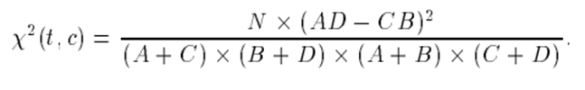
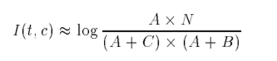
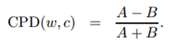
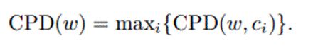
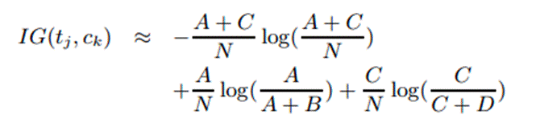
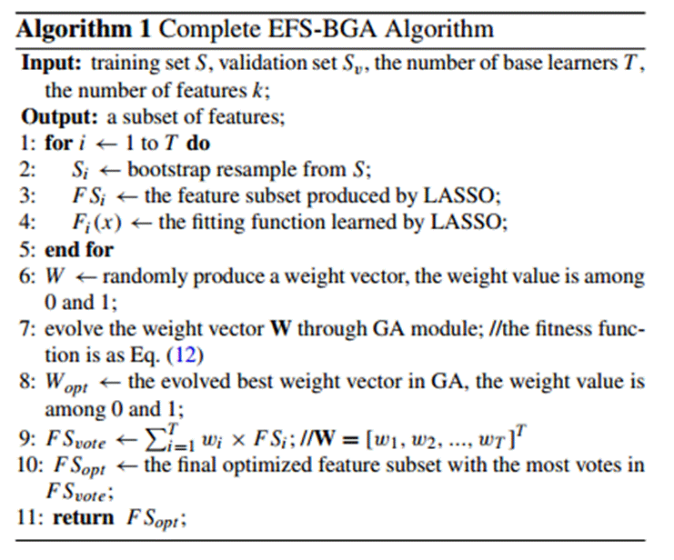

10.3: Feature Selection
Feature selection in text
classification is applicable for all features, except meta-features. In the
case of text classification, feature selection can be done through 1) the
Filter method 2) the embedded method using document frequency with a bag of
words or TF-IDF 3) the genetic algorithm 4) Ensemble feature selection.
The biggest problem with
text features is that the number of unique features is in the thousands. If you
move from unigram to bi-gram, the number of unique bi-gram features increases
manifold. Not every token is useful and many are useless noise. We need to be
highly discriminatory to select a handful list of such unique features.
10.3.1 Filter
Method
In the case of text
classification, feature selection using the filter method is performed first
and then passed into for feature extraction before being fed into the model.
They try to find out the least useful features. When done correctly, these
methods can help in reducing computation time and prevent overfitting.
10.3.1.1 Document
Frequency
It is the number of times a
word or n-gram is present across all documents [3], discarding
repetitions. It is different from word occurrence count. Word count is how many
times the specific word or n-gram appeared across all documents. It does not
discard repetitions.
For example, if we are
analyzing 100 documents and the word 'Lion' is present 10 times in only 1
document and not present in any other document and there is another word
'Bear', which is present in 7 documents and out of those 7 documents, it is
present 4 times in a single document. Word frequency for both 'Lion' and 'Bear'
is 10. However, document frequency is 1 for 'Lion' and 7 for 'Bear'.
If we have to choose
between word and document frequency, we should remove features based on
document frequency as it has more impact on feature vector representation. A
word can have a very high word frequency because it is mentioned in a document
many times, but a word that is mentioned in multiple documents but
comparatively less frequently within each document can have more bearing on
feature representation. The same applies to high-frequency words, as these have
a low degree of bearing in the feature vector.
Words that have either very
low or very high document frequency have little bearing on feature
representation. We can remove these words. The same principle can be applied to
higher-order n-grams, syntactic n-grams, and taxonomy features.
10.3.1.2 Chi-Square
It is otherwise known as X2
statistic [3] and it measures the lack of independence between
term(t) and class(c). It has a natural value of zero if t and c are
independent. If it is higher, then the term is dependent. It is not reliable
for low-frequency terms
Using the two-way
contingency table of a term t and a category c, where A is the number of times
t and c co-occur, B is the number of times the t occurs without c, C is the
number of times c occurs without t, D is the number of times neither c nor t
occurs, and N is the total number of documents, below will be the formula to
calculate Chi-square statistic.

10.3.1.3 Mutual
Information
In this method, rare terms
will have a higher score than common terms [3]. For multi-class
categories, we will calculate the MI value for all categories and will take the
Max (MI) value across all categories at the word level. It is calculated using
the below formula

10.3.1.4 Proportional
Difference
It calculates how close two
numbers are to becoming equal [5][6]
Below is the formula for
calculating the proportional difference

For multi-class categories,
we will calculate the MI value for all categories and will take the Max (MI)
value across all categories at the word level

10.3.1.5 Information
Gain
It measures the number of
bits of information obtained for category prediction by knowing the presence or
absence of a term in a document [3][4]. It is calculated using the
below formula

10.3.2
Metaheuristics
Algorithms
The genetic algorithm technique has been
found to perform well for the support vector machine technique with conceptual
representation wordnet features and TF-IDF feature representation [7].
Instead of randomly selecting several text tokens as features, we can instead
use a percentage of text tokens as features from the total number of words
[8].
The Genetic algorithm can be used
for deciding which text token should be included or excluded from the feature
vector. Although metaheuristic methods do not perform well when the number of
features is very high, like in the case of text classification, it has still
been cited in numerous research papers.
There are similar mentions of other
metaheuristics feature selection algorithms for text classification. However,
these methods all have one limitation in common, i.e., they cannot perform well
on high dimensional data where the number of features is numerous.
10.3.3 Ensemble
Feature
Selection
There are linear and non-linear models which can be
trained individually to identify the target variable. Each technique has its
strengths and weaknesses. One way to leverage the strength of different models
is to perform ensemble learning by training all the base learner models. We can
also leverage the strength of the different types of features such as n-grams
and feature extraction methods, such as TF-IDF or bag of words vector.
On one hand, it can significantly improve classification
model results, on the other hand, it can make the entire process
computationally heavy for actual use. We might need heavy computing power for
predicting labels from base models on new data. To solve this, we can 1) reduce
the complexity of individual base models and 2) reduce the number of base
models. This can be done by performing feature selection at both base models
and ensemble models. This entire process can be jointly done through an
algorithm called ensemble feature selection [9]. Figure 10.3.3
details the original ensemble feature selection algorithm

Fig 10.3.3: Ensemble feature selection (Wang et. al. 2020)
This algorithm was created for structured data. For text
classification, we can make adaptations at different levels. For the base
model, we can use document frequency to reduce words from the lower and higher
count of occurrence, instead of the lasso feature selection used in the
original paper. Through grid search, we can find the optimal combination of
lower and higher document frequency. For lower frequency, we use document count
and for the upper frequency, we use occurrence in percent of documents. By
reducing the number of words, feature vector size decreases and model
complexity also reduces.
The original paper performs bootstrapping. In the
adaption, we are performing 5 or 10 cross-validations to avoid overfitting. The
entire labeled dataset can be divided into 3 parts 1) training data for
training individual models, 2) ensemble training data for training ensemble
model and 3) test data. This can be done in a 60:20:20 ratio. For each
cross-validation set, training data is used for training base learner models
such as logistic regression, random forest, etc. After training is complete,
the base model is used for predicting raw class probabilities for ensemble
training data and test data. An ensemble learning classifier is trained using
raw class probabilities for ensemble training data as features and actual
labels as the outcome variable. Finally, the ensemble learning model is used
for predicting outcomes for test data. A performance metric, such as the f1
score is used for each cross-validation and is averaged across all
cross-validations to ascertain model performance.
For the ensemble model, we perform feature selection
through the genetic algorithm. This step is done as it is in the original
algorithm. Features that were discarded by the genetic algorithm are mapped
with all the base models. For any base model, if no class probability feature
is present in the list of features selected by the genetic algorithm, we can
discard those models. This entire process will result in fewer base models,
with each base model being less complex.
Python implementation of
these filter methods, metaheuristics, and ensemble feature selection exists in
the companion python library TextFeatureSelection.